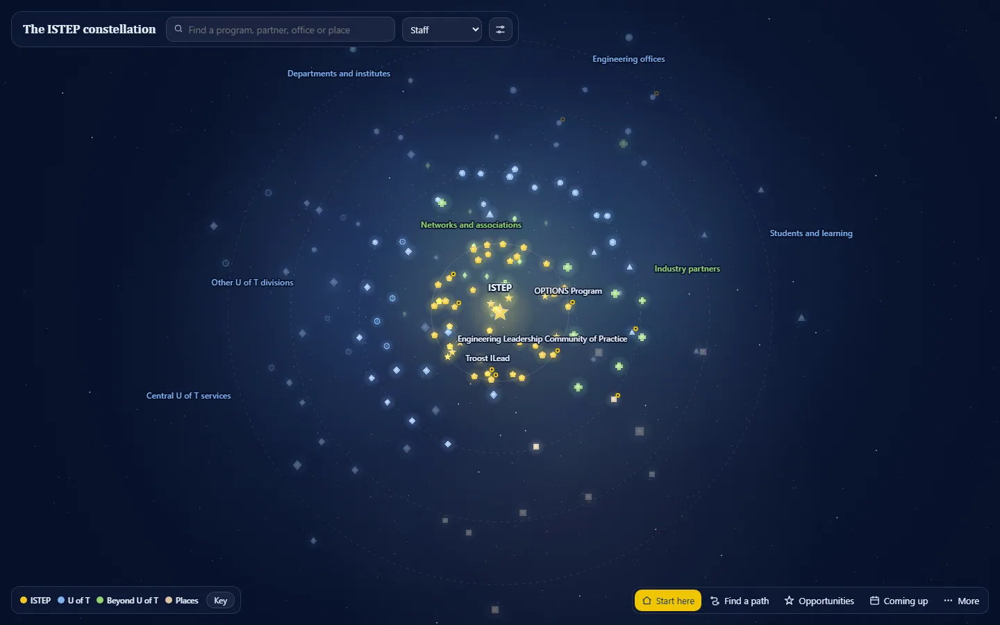
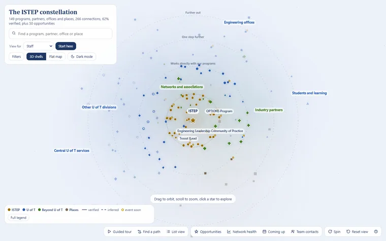
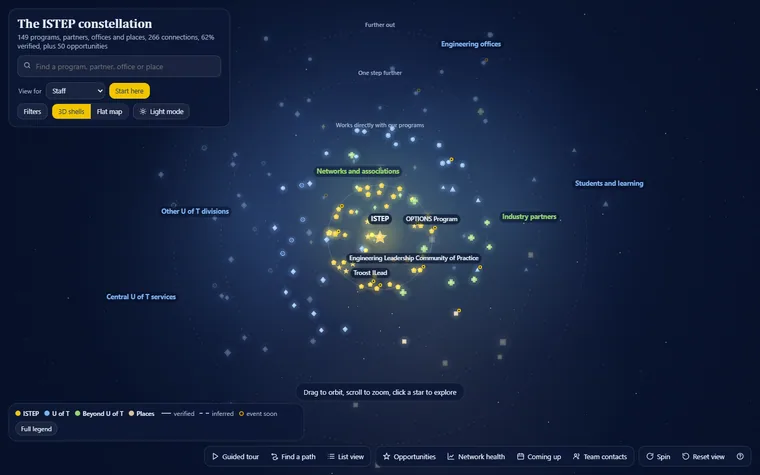
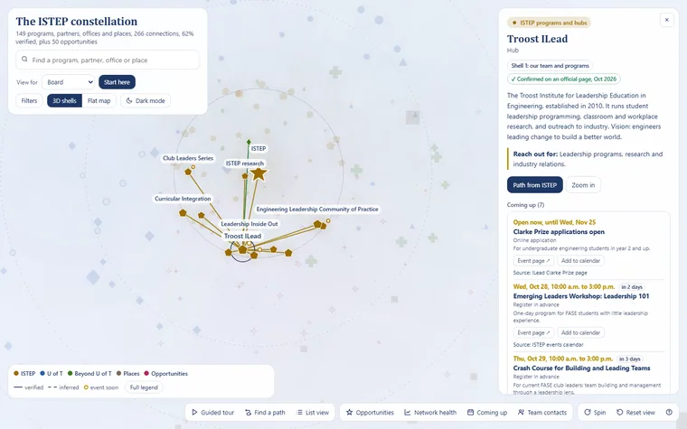

ISTEP Constellation map
An interactive 3D night sky of everyone ISTEP works with: who owns each relationship, how to reach an office, and where the network is thin, with views for staff, management, faculty and the board.


Result
- 150entries
- 255connections, 60% verified
- 4versions in nine days
A working prototype at version 7.
The problem and what I built
ISTEP works with programs, Engineering offices, departments, partners, networks, central services and venues. Nobody could see the whole network at once: who owns each relationship, how to reach an office, or where the network is thin.
An interactive 3D night sky of 150 entries and 255 connections, in vanilla JavaScript on Canvas 2D with a hand-written projection. Find a path between any two entries, check the network's health, take an 11-stop tour, or switch to a view for staff, management, faculty or the board.
Full detailsHow it works, the full feature list, decisions, numbers and next steps
Tools
- Vanilla JavaScript on Canvas 2D
- A hand-written 3D projection (no D3, no three.js)
- A custom force layout
Calm start.
The problem
ISTEP works with a lot of people and offices: programs, Engineering offices, departments, industry partners and clients, networks, central services and venues. Nobody could see the whole network at once: who owns each relationship, how to reach an office, or where the network is thin.
What I built
- 150 entries and 255 connections. 60% of the connections are verified, and the subtitle computes that figure live.
- Structure: 10 groups, 5 relationship types and 11 topic tags.
- Events: 16 dated events, with a gold ring on anything happening in the next 30 days, lists of the next events and calendar (.ics) export.
- Contacts by role only. A private contacts file can be loaded for the session and is never saved into the map.
- An internal layer is left out of everything shown here.
Features
- 3D shells or a flat map, in light and dark modes.
- Search, topic filters, a legend that toggles groups, and connection-type filters.
- Find a path: the shortest chain between any two entries, for example ISTEP to the Faculty to a department to a company.
- Network health: partners tied to only one program (fragile), Engineering units two or more steps away (gaps), and a "how sure are we" verified meter.
- An 11-stop guided tour.
- Role views for staff, management, faculty and the board, with deep links such as
?role=board. - Accessibility: an accessible list view, 12 keyboard shortcuts and a reduced-motion option.
How it works
It's vanilla JavaScript on a Canvas 2D surface, with a hand-written 3D projection and a custom force layout: no D3 and no three.js. Each version kept the same data and changed how much it shows at once.
| Version | Date (2026) | What changed |
|---|---|---|
| v4 | Oct 19 | The base features, with 10 separate group colours. |
| v5 | Oct 23 | Role views with "Start here" panels, the internal layer, and the Engineering IT portal added. |
| v6 | Oct 26 | "Calm start": lines hidden until hover, outer rings faded, colours collapsed from 10 to 5 families, and the detail panel reordered for each role. |
| v7 | Oct 28 | A cleaner interface: a slim top bar and a four-button dock (Start here, Find a path, Opportunities and next events), labels only for anchors until hover, a quieter panel and a "Key" legend. |
Key decisions
- From feature-rich to calm. Each version showed less at once: lines on hover, fewer colour families, labels only where they help.
- Role-aware. Staff, management, faculty and the board each get a "Start here" view and a detail panel ordered for what they need.
- Careful with data. Roles, never names; contacts only for the session; and the verified share shown live, so nobody mistakes an inference for a fact.
Results and status
A working prototype at version 7.
What I'd do next
- Prepare a shareable build without the internal layer, role mailboxes or form links.
- Capture a Find a path screenshot and a before-and-after of version 4 against version 7.
Gallery

Staff view, light mode. 
Staff view, dark mode. 
Board view, with an ISTEP program selected and its next events.